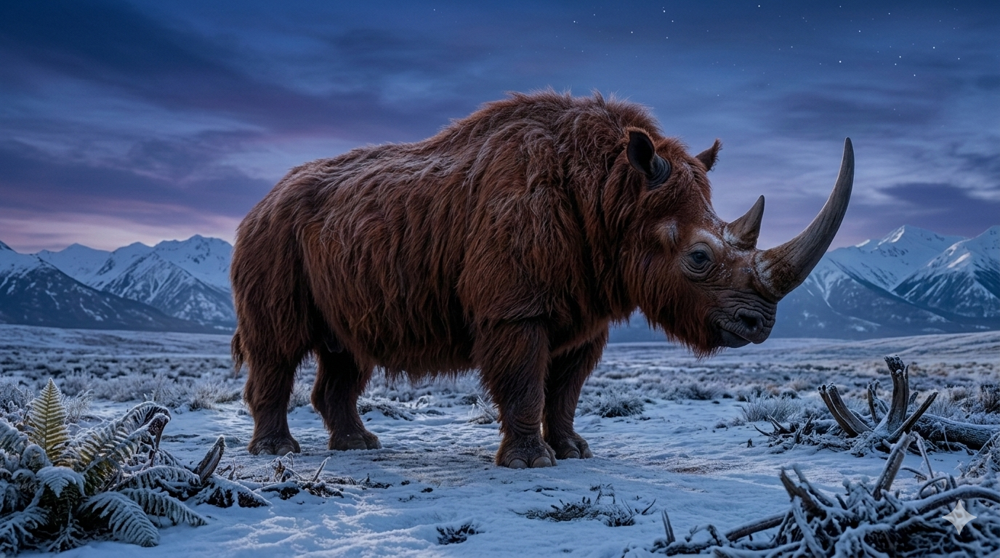

קרנף צמרירי
The Woolly Rhinoceros: Coelodonta antiquitatis

תיק מחקר: נתונים אבולוציוניים
תקופת פעילות
פליסטוקן
אחד מסמלי עידן הקרח; נכחד בסוף התקופה הקרחונית האחרונה.
מסה ומשקל
כ-2 עד 3 טונות
קרנף כבד, חסון ונמוך יחסית, מותאם לקור קיצוני ולנוף פתוח.
ממדים
עד כ-2 מטרים בכתף
גוף מוצק, רגליים קצרות יחסית, גבנון שרירי גדול וקרן קדמית ארוכה.
מיקום גיאוגרפי
אירופה וצפון אסיה
נפוץ מערבות אירופה ועד סיביר וצפון-מזרח אסיה, בעיקר במרחבי טונדרה-ערבה קרים ויבשים.
סיווג טקסונומי קריטי
יונק מפריט פרסה — Rhinocerotidae / Coelodonta
הקרנף הצמרירי היה קרוב משפחה של הקרנפים המודרניים, אך מותאם בצורה קיצונית לקור: פרווה ארוכה, אוזניים קצרות, גוף דחוס, שכבת שומן, וקרניים ששימשו כנראה גם להתמודדות עם שלג וצמחייה קפואה.
01 // ניתוח אטימולוגי נרחב
| החלק בשם | שפת מקור | פירוש ומשמעות היסטורית |
|---|---|---|
| Coelo- | יוונית עתיקה | חלול / שקוע החלק הראשון בשם מתייחס למבנה שיני הטוחנות, שבהן קיימות שקערוריות או מבנה פנימי ייחודי. השם אינו מתאר את הפרווה או את הקרן, אלא דווקא פרט אנטומי עדין שהבדיל את הסוג מחלק מקרנפי העבר האחרים. |
| -donta | יוונית עתיקה | שן יחד נוצר השם Coelodonta — **"שן חלולה"** או **"שן שקועה"**. זהו שם מדעי המבוסס על מבנה השיניים, בדומה לשמות רבים בפלאונטולוגיה שבהם דווקא פרט קטן בשלד מקבל משמעות טקסונומית גדולה. |
| antiquitatis | לטינית | של העתיקות / מן העולם הקדום שם המין מדגיש את קדמותו של בעל החיים. המשמעות המלאה של השם המדעי היא בקירוב: **"השן החלולה מן העת העתיקה"** — שם מעט טכני, אך מתאים ליצור שנחשף ממאובני עידן הקרח והפך לאחד מסמלי המגפאונה הקדומה. |
02 // תולדות הגילוי: מהמערות אל הפרמפרוסט
קרנף שנצפה בידי בני אדם קדומים
הקרנף הצמרירי אינו מוכר רק מעצמות. ציורי מערות מאירופה מראים בעלי חיים דמויי קרנף עם פרווה, קרן גדולה וגוף מסיבי, מה שמרמז שבני אדם קדומים ראו אותו, הכירו אותו, וציירו אותו כחלק מעולם החי של עידן הקרח. זה הופך אותו לאחד מבעלי החיים הפרהיסטוריים שיש לנו לגביהם גם תיעוד פלאונטולוגי וגם עדות תרבותית קדומה.